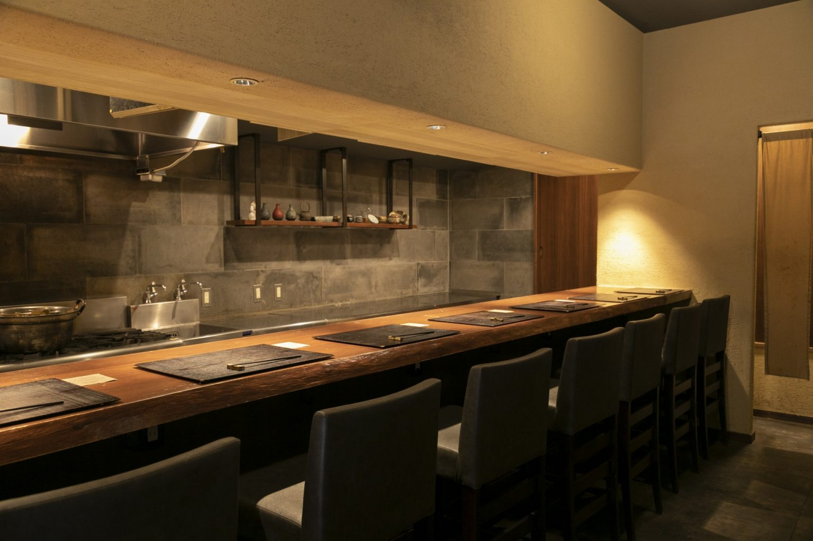
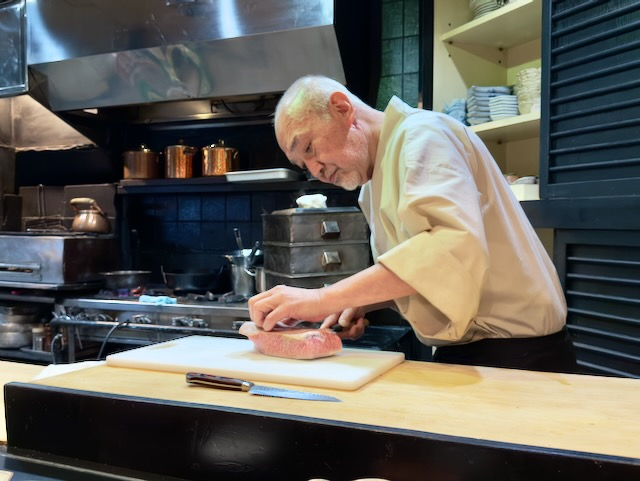
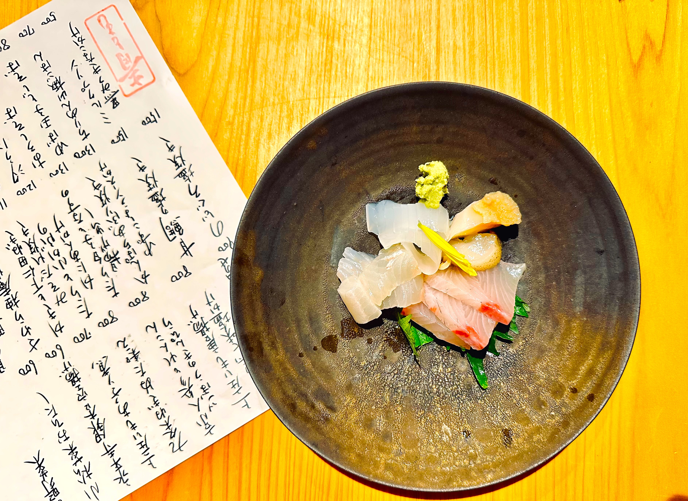

place-ippachi-cover.jpgIppachi
- Location
- Baba-dōri, Utsunomiya — 5 min from Tōbu Utsunomiya station
- Phone
- 028-000-0000
- Hours
- 17:30–23:00, closed Sundays
- How to book
- Phone, a few days ahead. Counter seats go first.
- Price
- ¥2,000–3,000 for dinner
- Seats
- Eight at the counter, two small tables
- English menu
- No
- English staff
- No, but they are patient
First impressions
Ippachi is the second-highest-rated Japanese restaurant in Tochigi and dinner costs about the same as two drinks in Tokyo, which is the sort of thing you have to see for yourself before you believe it. It's five minutes from Tōbu Utsunomiya station on a quiet street, behind a wooden door with almost nothing on it.
Inside there are eight seats at the counter and a couple of small tables behind. The counter is where you want to be. Everything is cooked in front of you, one plate at a time, and the pace of the meal is set by whoever's cooking rather than by you.
There's no printed course. You'll be told what came in that day, and if you don't follow it, pointing at whatever's on the ice works fine.

place-ippachi-counter.jpgWhat to order
The cooking is seasonal Japanese, and it moves month to month. These are the things that turn up often enough to ask for.
Food and drink quality
The cooking is precise without being fussy, and it's the sort of place where the simplest thing on the counter is the best thing on the counter. Grilled fish, a bowl of something simmered, rice cooked properly.
The sake list is short — maybe a dozen bottles, most of them Tochigi. It isn't a collector's list and it isn't trying to be. What it is is a list chosen to go with this food, which is rarer and more useful. Ask what they'd pour with what you've ordered.

place-ippachi-dish.jpgWhat it's like
Quiet, mostly locals, a lot of regulars who don't order because they don't need to. Nobody's taking photographs. It's the kind of room where you end up talking to whoever's next to you about halfway through, whether or not you share a language.
Two hours is about right. Book the counter, go early, and don't plan anything after it.
Counter cooking of a standard that would cost three times as much in Tokyo, in a city most people change trains in. Book it before you book anything else in Utsunomiya.
 place-mushu-ogawa.jpg
place-mushu-ogawa.jpg